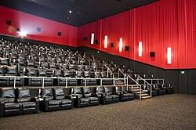
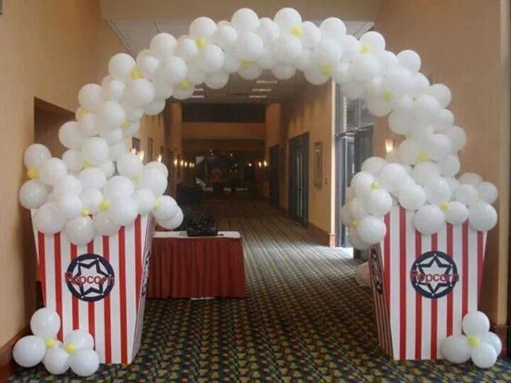

Sobre Nosotros
Somos un complejo cinematográfico creado el comprometido con ofrecer una experiencia de ocio completa, combinando tradición y modernidad en cada sesión.
Somos un complejo cinematográfico creado el comprometido con ofrecer una experiencia de ocio completa, combinando tradición y modernidad en cada sesión.

Contamos con espacios amplios, cómodos y equipados con la tecnología adecuada para disfrutar de cualquier película en las mejores condiciones.
Todas nuestras salas de cines cumplen con los requisitos de emisión de ruido establecidos por el estado
Ofrecemos una selección variada de títulos actuales, ciclos temáticos y eventos culturales pensados para espectadores de todas las edades.

Siempre tenemos eventos especiales cinematográficos según la festividad actual
Puedes consultar la nota de tu película favorita en Filmafinity